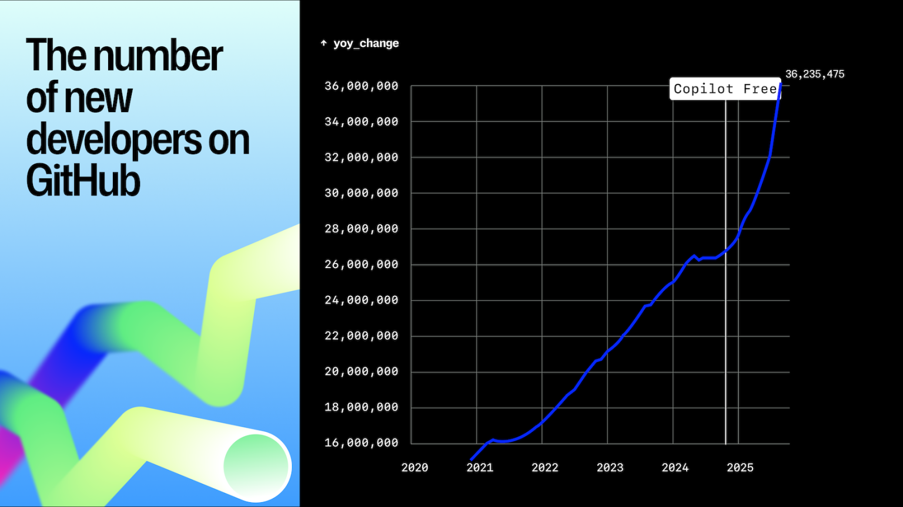

Who here is
"Raise your hand if you'd call yourself a developer, studied computer science, or have worked as a SWE."
(Pause, scan the room, count hands)
(To those who didn't raise hands): "You're wrong — and I'm going to show you why over the next 20 minutes."
The Era of the Domain Expert Developer
"We're living in a really cool moment where the tools have finally caught up. Anyone can build software now. But here's what I think most people miss — YOU are actually at an advantage."
"Why? Because you have domain knowledge. You understand healthcare. You know the workflows, the pain points, the regulations. A software engineer would need months to learn what you already know."
"The people who are going to build the most interesting, most useful software aren't necessarily CS grads. They're experts in a field — like yours — who can now turn their knowledge directly into working products."
"I actually tell college students now: major in something else — biology, finance, writing, visual media, whatever you're passionate about — and take CS as a minor. The domain knowledge is the hard part. The coding tools will meet you where you are."
Elijah Straight
Member of Technical Staff, GitHub
(Used to not be technical)
"I'm Elijah Straight, Member of Technical Staff at GitHub."
"And honestly — I'm a perfect example of what I just said. I studied CS, but when I started my career I would NOT have called myself technical. These AI tools changed that. The rate at which you can learn now is completely different. Things that used to take me weeks to figure out, I can understand in an afternoon. So when I say anyone can do this — I'm speaking from experience."
What is GitHub?
→ Google Drive — but for code. It's where developers store, collaborate on, and build software.→ 150M+ developers use GitHub worldwide.→ Home to the world's most important open source — from AI models to the human genome .
"If you don't know what GitHub is — think of it as Google Drive for code. It's where developers store, collaborate on, and build software."
🧬
GitHub Is Not Just for SaaS
World-changing science lives on GitHub too.
"But GitHub is not just for building your B2B SaaS agent. There are many other cool things on there."
"The entire human genome lives on GitHub. Google DeepMind's AlphaFold — the AI that predicted the structure of nearly every protein — is on GitHub."
"These are massive, world-changing projects."
Last year, a new developer joined GitHub every second.

"Last year, a new developer joined GitHub every second."
"So what changed? Why is a new developer joining GitHub every second? Two words: AI agents. Let me explain."
🤖
You Should Be Using Agents
An AI agent is an AI system equipped with tools that allow it to take action — browse the web, write files, run code, build things on your behalf.
"So let me show you what that actually looks like. Let's talk about AI agents for a second. You've probably all used ChatGPT or Claude — those are now what we'd call agentic systems. Meaning they're not just chatbots anymore."
"And this is my favorite tweet right now. The idea is simple — whatever you're handing off to AI agents today, you should probably be going one level higher. Let them do more."
"A perfect example: instead of asking an AI to help you write code, you hand it the whole task and let it build the thing. I'm going to demo two different coding agents: Copilot CLI and GitHub Spark. Two different ways of attacking the same problem."
"Copilot CLI lives in the terminal — it's great for when you want to build something more involved. Spark is fully visual — you just describe what you want and it builds it. We're going to try both."
⌨️
Live Demo: Copilot CLI
Let's build something together — right here, right now.
💡 The trick: Give the agent an article as context — like handing a new hire a reference doc before they start.
"Alright, I'm going to open the terminal. Don't panic — last time I opened this in front of my almost-60-year-old dad, he thought I was hacking him."
"The terminal is just a text box where you talk to your computer. That's it. And now, with GitHub Copilot, you can talk to it in plain English."
ASK THE AUDIENCE: "What's a problem you run into in your day-to-day? Something annoying, something you wish you had a tool for?"
ARTICLE TRICK: "Check this out — I'm going to give the agent an article as context. Think of it like handing someone a reference doc before they start working for you."
Write the prompt live, narrate what you're typing. Kick it off then TRANSITION to Spark while it builds.
✨
GitHub Spark
No terminal. No code. Just describe what you want.
✨
Give me an idea.
From idea → working prototype in ~2 minutes. No engineering team. No sprint planning. No Jira tickets.
"While that's building, let me show you something called GitHub Spark. This is for when you don't even want to touch the terminal. You just describe what you want and it builds it for you — no code, no setup, nothing."
ASK THE AUDIENCE: "Give me a problem. Something you'd love to have a little app for. Doesn't have to be anything crazy."
Build it live in Spark. Narrate as it builds: "See — it's creating the layout, adding the logic..."
Show the result: "You just went from idea to working prototype in about 2 minutes."
🎉
Let's See What We Built
$ copilot ✓ Build complete
We built two working things during this presentation — one from the terminal, one from a visual tool. Neither required you to know a single line of code.
"Remember that thing we kicked off a few minutes ago? Let's see how it did."
Switch back to the terminal. Show the generated code/site. If it created a localhost deployment, pull it up in the browser.
"We built two working things during this presentation — one from the terminal, one from a visual tool. Neither required you to know a single line of code."
"The tools are here. They're free to start. The only thing standing between you and building that thing you've been thinking about... is the belief that you can't."
"And I hope we just showed you — you absolutely can."
You are a developer.
(Pause. Let it land. This mirrors Slide 1's "Who here is a developer?" — the loop is closed.)
GitHub for Startups
$10,000 in credits to get started
"GitHub for Startups gives you $10,000 in credits to get started. Scan that QR code — and definitely connect with me on LinkedIn. I'd love to hear what you end up building."
Stay up front, available for questions. Don't rush off.